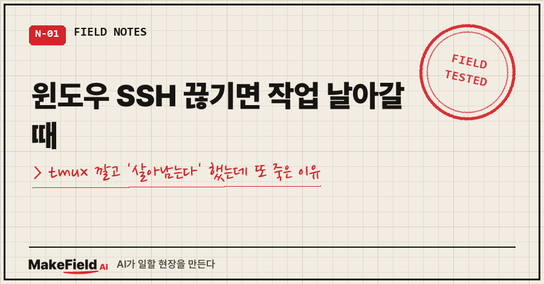
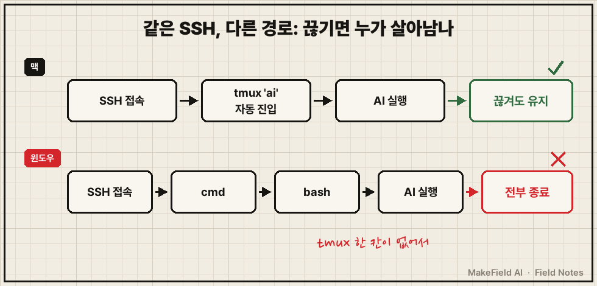
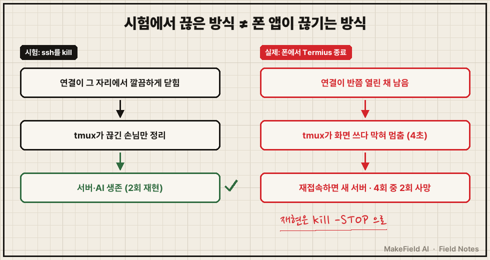
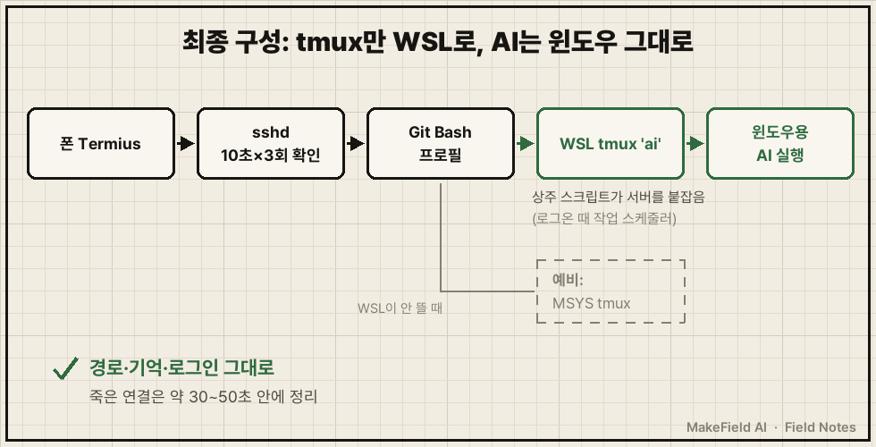

윈도우 SSH 끊김 때문에 작업이 통째로 날아간다면, tmux를 까는 것까지는 다들 아는 답이에요. 저는 그다음에서 두 번 더 넘어졌습니다.
핵심 사실 한 줄. 폰 SSH 앱(Termius)을 끄면 연결이 깔끔하게 끊기는 게 아니라 '반쯤 열린 채' 남고, 이때 윈도우용(MSYS) tmux 서버는 화면을 쓰다 막혀 멈추거나 죽을 수 있어요. 제 PC에선 4번 중 2번 죽었고, WSL 안의 tmux로 옮기고 sshd의 ClientAliveInterval을 켜서 해결했습니다(2026년 10월, Windows 10 + OpenSSH 기준).
시험대에서 멀쩡하던 장비가 설치한 자리에서 서는 일을 15년 동안 겪어 온 제어 엔지니어예요. 이번엔 제가 그 함정에 AI랑 같이 빠졌네요..
1. 맥은 되는데 윈도우만 Termius 끄면 다 날아가요
윈도우 PC는 터미너스 앱 끄면 다 날라가네? 맥쪽은 안날라가던데밖에서 폰으로 집 PC에 SSH로 들어가 AI(Claude Code)를 돌리는데, 앱만 끄면 하던 작업이 사라졌어요.
맥은 SSH로 들어오면 tmux ai 세션으로 자동 진입하게 해 뒀고, 윈도우는 OpenSSH → cmd → bash → AI로 바로 이어져 있었거든요. SSH가 끊기면 밑의 프로세스가 전부 같이 끝나요.
tmux는 터미널 세션을 서버 쪽에 붙잡아 두는 프로그램이에요. 연결이 끊겨도 안의 작업은 계속 돌고, 다시 접속하면 같은 화면에 붙습니다.

그래서 관리자 권한 없이 도는 MSYS2용 tmux를 설치하고, ~/.bash_profile 맨 위에 SSH로 들어올 때만 tmux로 들어가는 줄을 넣었어요.
# SSH 대화형 접속일 때만 tmux 'ai' 세션에 붙거나 새로 만든다
tmux new -A -s ai && exitAI가 PC 안에서 자기 자신에게 SSH로 접속한 뒤 ssh를 강제 종료해 보니 ai 세션은 유지됐어요. 여기까진 교과서대로였죠.
2. AI의 판정은 두 번 틀렸어요
첫 번째, 오진. 다시 접속하니 안 이어졌어요. AI는 "윈도우 OpenSSH가 연결을 닫을 때 tmux 서버까지 정리한다"고 진단하고 예약 작업까지 만들었는데, 실측해 보니 tmux는 멀쩡했어요. 진단 기각, 수정은 전부 되돌렸습니다.
진짜 원인은 허무했어요. 이어가려던 대화가 tmux를 깔기 전에 시작된 대화라 애초에 tmux 밖에 있었던 거예요. 대화 기록의 마지막 시각과 SSH가 끊긴 시각이 22:46:57로 똑같았습니다.
두 번째, 오판. "너는 시뮬레이션 해봤나" 하고 다시 시험을 시켰어요. AI는 실제 접속과 같은 경로로 들어가 ssh를 강제 종료했고, 두 번 다 살아남았다고 보고했어요.
그 보고 10분쯤 뒤, 폰 앱을 끄고 다시 들어갔어요.
안이어진다 최악이네tmux 서버는 죽어 있었고, 그 안의 AI는 화면 없이 고아로 남아 있었어요. 재접속하자마자 새 ai 서버가 생겼고요(접속 23:40:59 → 새 서버 23:41:03).
3. 진짜 원인: 폰 앱을 끄면 연결이 '반쯤 열린 채' 남는다
시험이 틀린 게 아니라 시험 조건이 실제 끊김과 달랐어요.
- PC 안에서 ssh를 kill하면 연결이 그 자리에서 깔끔하게 닫혀요. tmux는 끊긴 손님만 정리하면 끝이에요.
- 아이폰에서 Termius를 끄면 앱이 멈출 뿐, 연결은 반쯤 열린 채 남아요. 아무도 화면을 안 읽는 상태죠.
- MSYS tmux 서버는 그 손님에게 화면을 쓰다 막혀 통째로 멈췄어요. 4초 만에 명령에 응답이 없었고, AI도 같이 멈췄어요.
- sshd 설정이
ClientAliveInterval 0(꺼짐)이라 죽은 연결이 몇 시간이고 남을 수 있었어요. - 그 사이 재접속하면 멈춘 서버 대신 새 서버가 생기고, 옛 서버는 회복하거나 죽었어요. 4번 중 2번이 죽었습니다.
이 상태는 kill로는 안 나오고, ssh를 죽이지 않고 일시정지시켜야 재현됐어요.
# 재구성 예시: 폰 앱이 멈춘 상황 흉내 — 클라이언트를 죽이지 않고 얼린다
kill -STOP <ssh 클라이언트 PID>여러분이 돌려 본 시험도 혹시 "실제로 끊기는 방식"이 아니라 "끊기 편한 방식"이지 않았나요?

4. 해본 방법 4가지, 남긴 건 하나
| 시도 | 결과 | 판정 |
|---|---|---|
| 콘솔(ConPTY)에 묶여 죽는다는 가설 | 깔끔하게 끊으면 4가지 변형 모두 생존 | 기각 |
| 접속마다 일회용 중계 tmux | 서버는 4/4 생존, 유령 손님이 쌓여 화면이 간헐적으로 멈춤 | 안 씀 |
| WSL 안에서 Git Bash 실행 | 화면 출력 자체가 안 됨 | 안 씀 |
| WSL(Ubuntu) tmux + 그 안에서 윈도우용 AI 실행 | 손님을 80초 얼려도 서버 응답, AI 생존 | 채택 |
WSL을 처음에 피한 이유는 리눅스용 AI를 따로 깔면 경로·기억·로그인이 따로 놀기 때문이었어요. 그래서 tmux만 WSL에서 돌리고, 창 안에서는 윈도우용 실행 파일을 그대로 불러요.
함정이 하나 더 있었어요. WSL은 붙잡는 프로그램이 하나도 없으면 tmux까지 정리해 버려요. 그래서 로그온 때 작업 스케줄러가 작은 상주 스크립트를 띄워 tmux 서버를 붙잡게 했어요.
죽은 연결을 오래 두지 않게 sshd 설정도 바꿨어요.
# C:\ProgramData\ssh\sshd_config
ClientAliveInterval 10
ClientAliveCountMax 3OpenBSD sshd_config 공식 설명서에는 "ClientAliveInterval을 15로, ClientAliveCountMax를 기본값(3)으로 두면 응답 없는 SSH 클라이언트는 약 45초 뒤 끊긴다"고 나와요. 기본값 0은 확인 메시지를 아예 안 보낸다는 뜻이고요. 저는 10초 × 3회라 대략 30~50초 안에 정리돼요. sshd를 재시작해도 이미 접속한 세션은 안 끊겼어요.

옛 MSYS tmux는 지우지 않고 WSL 쪽이 안 뜰 때 들어가는 예비 길로 남겼어요. 하나만 믿는 구조는 그 하나가 서면 끝이니까요.
5. 자주 묻는 것
Q. tmux 안에 있는데도 재접속하면 이전 대화가 안 보여요.
그 대화가 tmux 밖에서 시작된 건 아닌지부터 보세요. 제 첫 "안 이어짐"이 그거였어요. tmux를 깔기 전에 띄운 프로그램은 tmux가 지켜 주지 않습니다.
Q. 시험할 때 조심할 건요?
자동으로 tmux에 붙게 해 두면 시험용 접속도 실사용 세션에 그대로 붙어요. 이번에도 시험 중 제 세션에 세 번 붙었어요(입력은 안 보냈어요). 대화형 시험은 세션이 비어 있을 때 하거나 ssh -n처럼 화면 없는 접속으로 하세요.
6. AI가 "통과"라고 할 때 이제 먼저 묻는 것
AI는 두 번 자신 있게 틀렸어요. 한 번은 원인을 잘못 짚었고, 한 번은 시험 조건이 실제와 달랐어요.
그래서 순서를 바꿨어요. "통과" 보고를 받으면 결과보다 먼저 "그 시험, 실제로 실패하는 방식이랑 같은 조건이야?"를 물어요. 실패 조건을 먼저 재현하지 못하면 통과는 아무 의미가 없더라고요.
시험대에서 통과한 장비도 설치한 자리에서 다시 봐야 하듯, AI 보고서도 똑같았습니다.
AI한테 맡긴 작업이 진짜 돌고 있는지 확인해 본 기록들은 makefield.ai에 계속 쌓는 중이에요.
출처
- OpenBSD manual page, sshd_config(5) — ClientAliveInterval·ClientAliveCountMax 항목 (2026-10-23 원문 확인) → https://man.openbsd.org/sshd_config
- 사례: 2026-10-11~12 개인 PC 윈도우 SSH·tmux 세션 유지 설정, 오진·원복, WSL 전환 작업 기록
태그: #윈도우SSH끊김 #윈도우tmux #tmux세션유지 #Termius #터미어스 #SSH세션유지 #ClientAliveInterval #sshd_config #WSL #WSLtmux #윈도우OpenSSH #원격접속끊김 #ClaudeCode #AI테스트검증 #MakeFieldAI